Background: The purpose of this group project is to analyze COVID-19 data from Washington State to understand the relationship between income, poverty, political affiliation, and age with three Covid-19 outcomes: cases, hospitalizations, deaths.
Methods: This project was completed by using
Python, Pandas, Plotly, and Matplotlib. The data was extracted from CDC, Census, and usa.com for over 50,000 cases. Linear regression, Chi-Square, outlier analysis, and visualizations conducted using Python, Pandas, Plotly, and Matplotlib. The full presentation of the project can be found here:
Presentation
Hypotheses: H1A: Washington counties grouped by political affiliation will show a significant difference in Covid-19 outcomes (cases, hospitalizations, and deaths).
H2A: Mean household income will negatively correlate to Covid-19 outcomes (cases, hospitalizations, and deaths).
H3A: Poverty rate will positively correlate to Covid-19 outcomes (cases, hospitalizations, and deaths).
Conclusion: H1A: A significant difference was found between counties that voted majority republican vs majority democrat, in that republican majority counties has a signficantly higher rate of COVID-19 cases.
H2A: For democrat leaning counties income was significantly and positively correllated to all three Covid-19 outcomes. We investigated one potential confounding predictor variable, population density, which did show as significant positive correlation with hospitalizations.
H3A: For democrat leaning counties poverty rate was significantly and negatively correllated to hospitalizations only
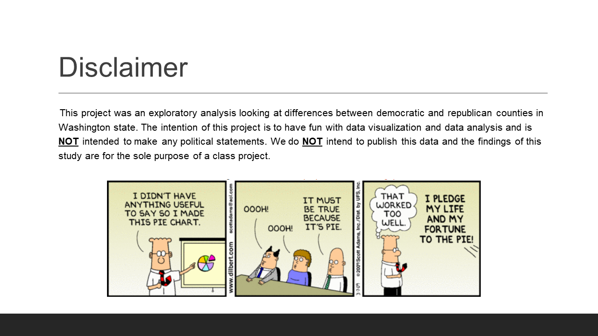
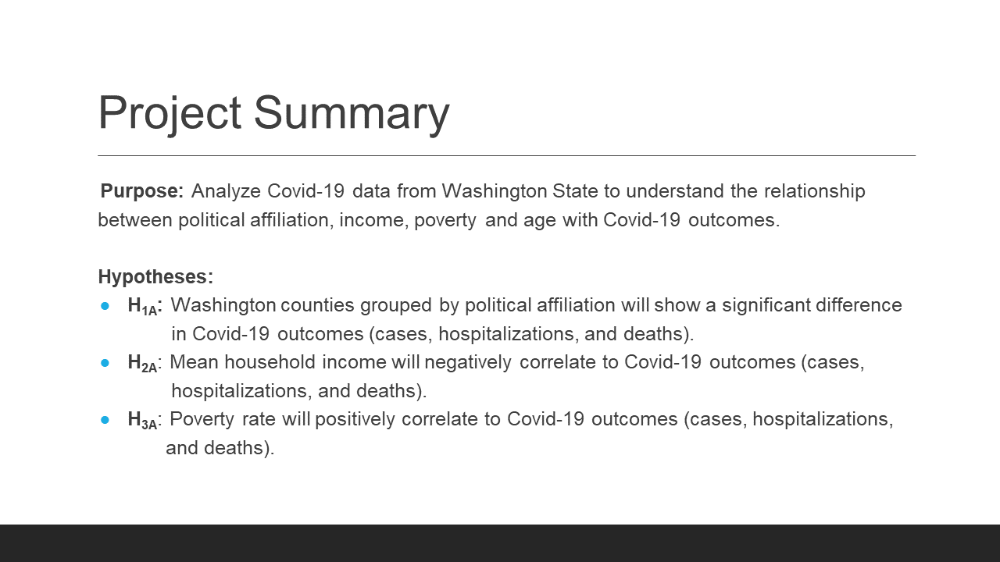
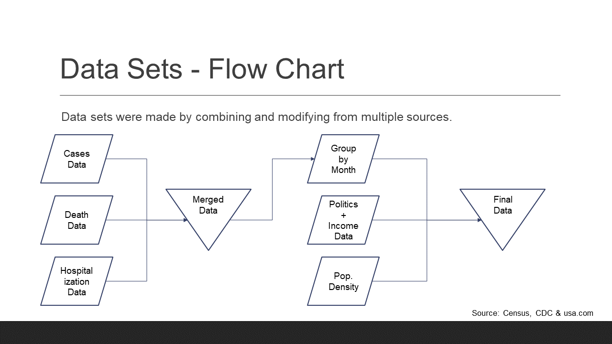
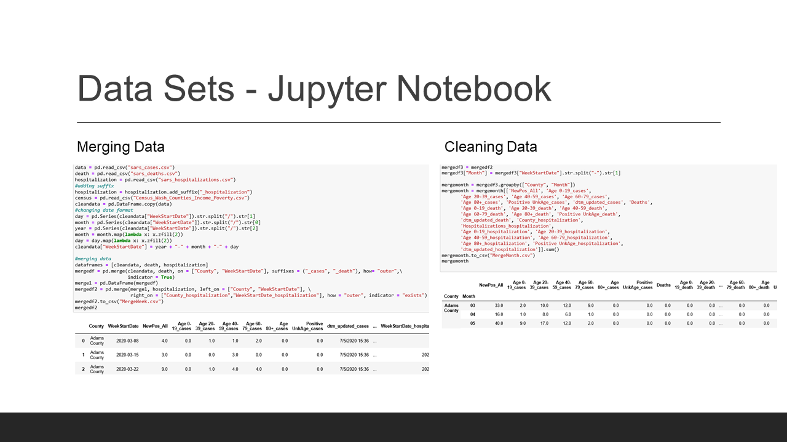
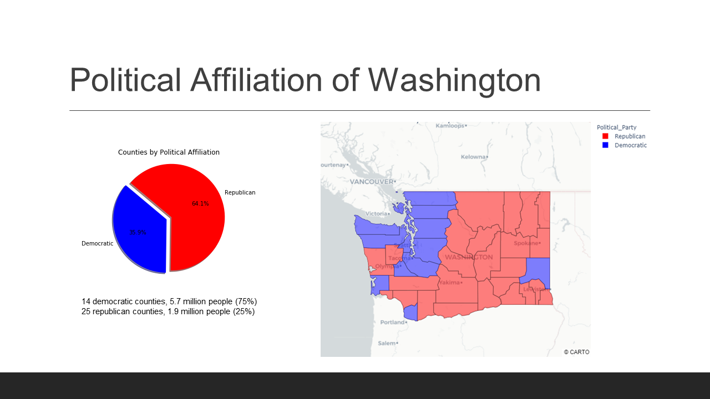
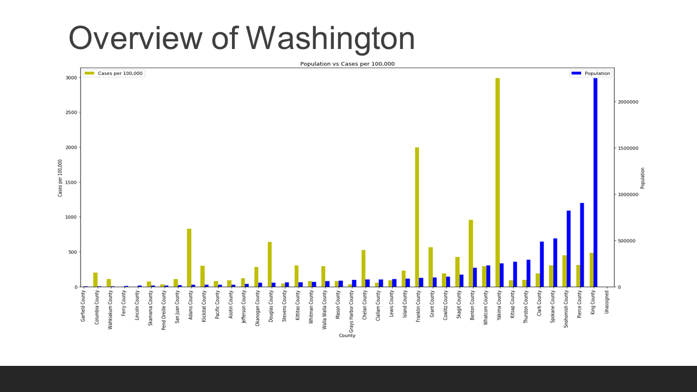
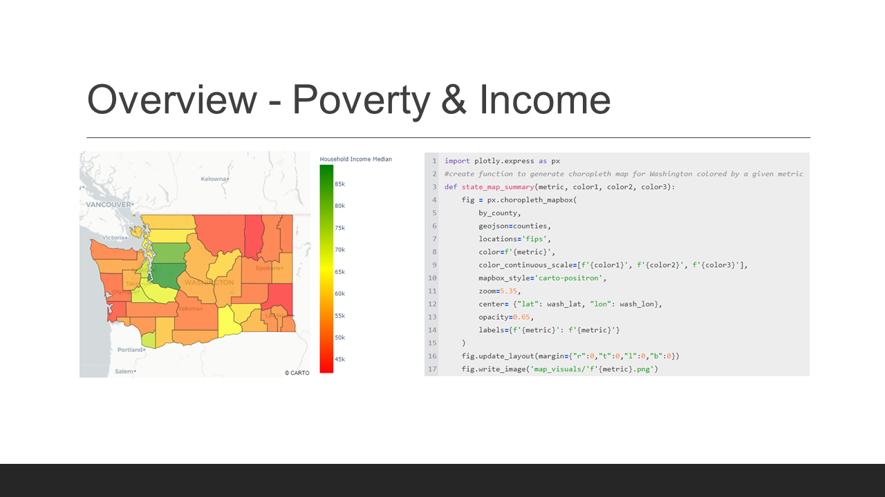
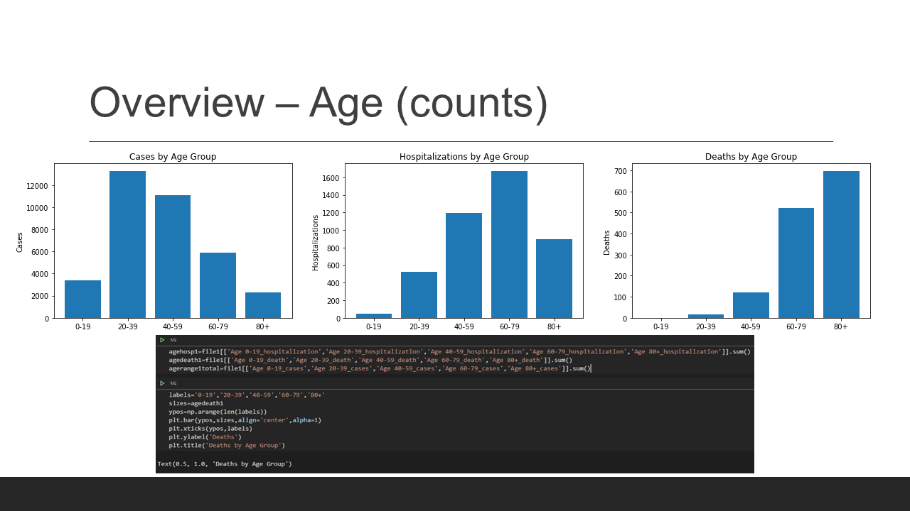
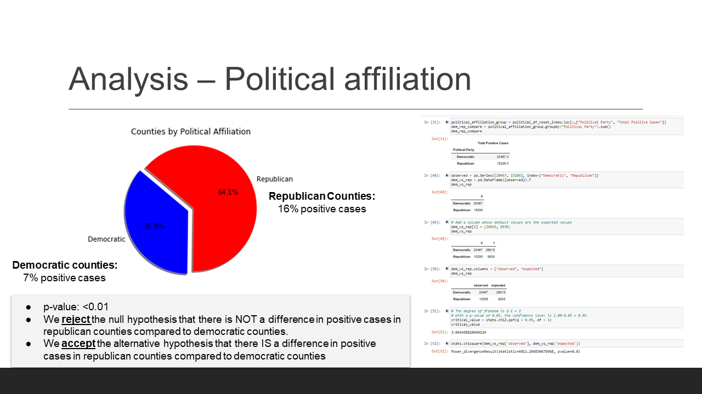
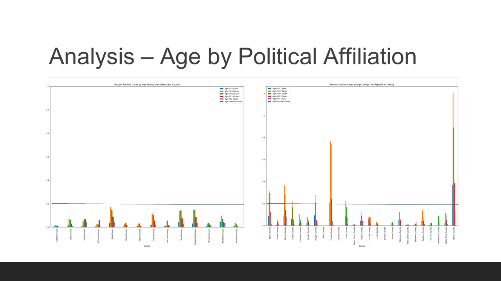
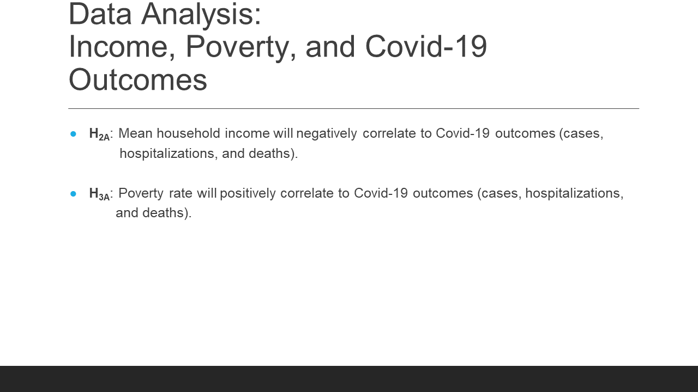
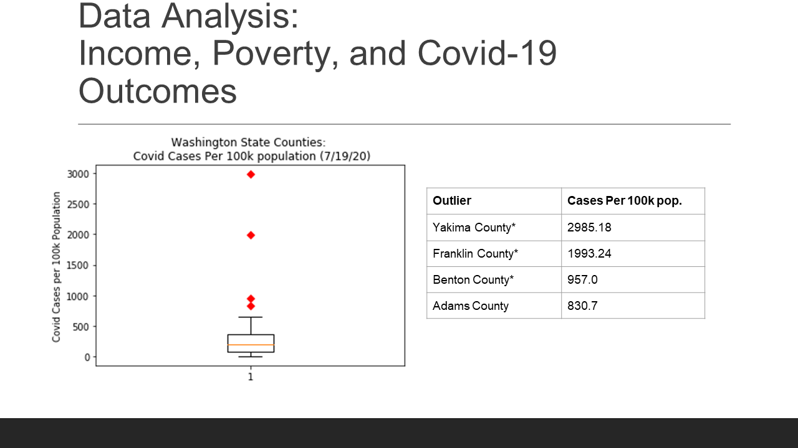
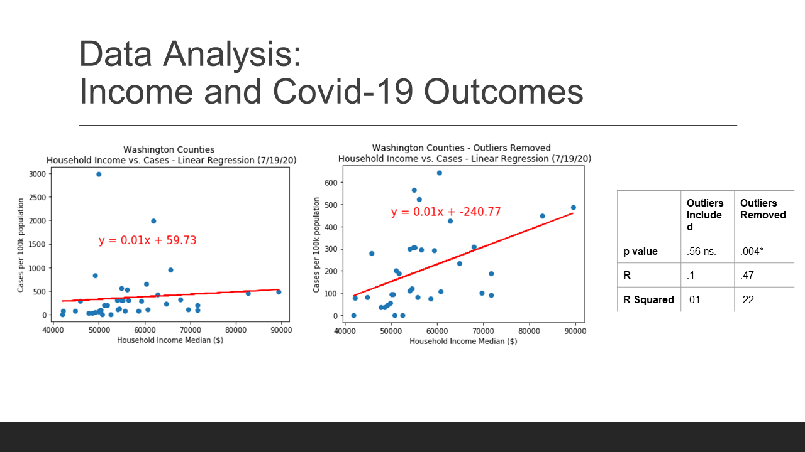
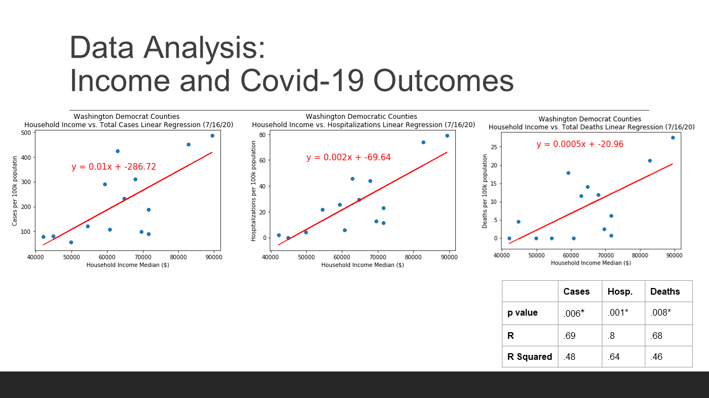
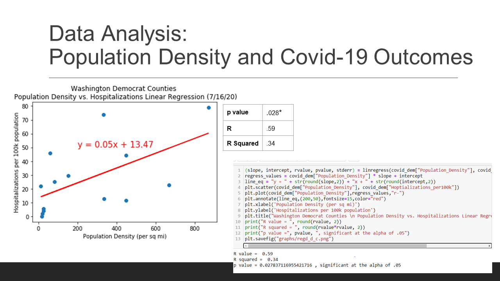
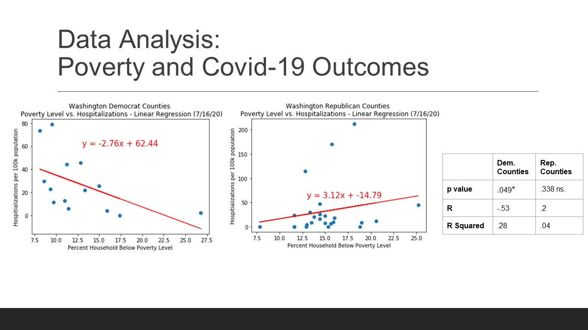
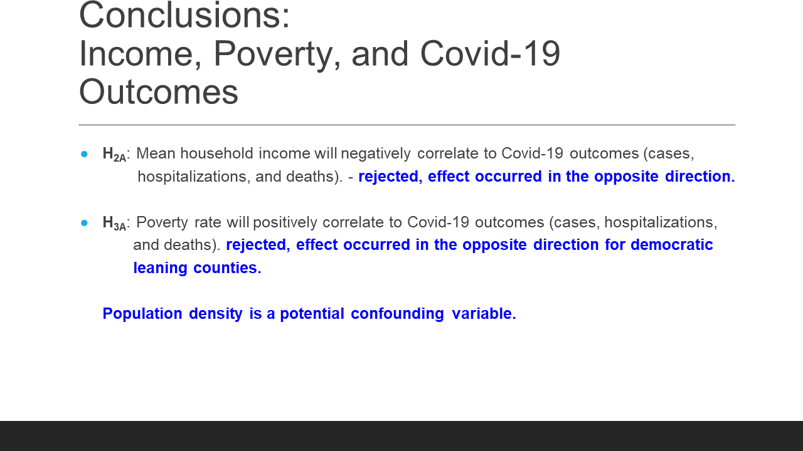
Previous
Next